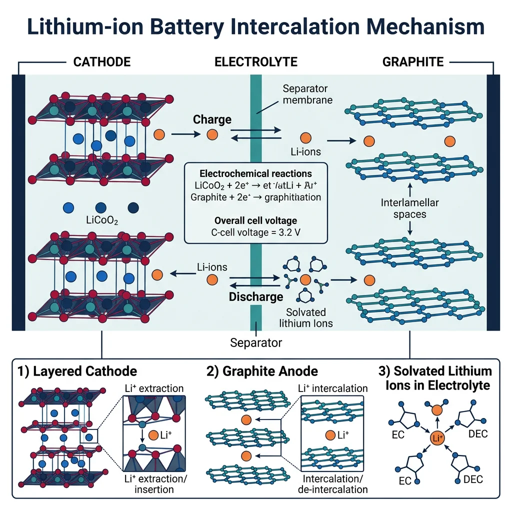
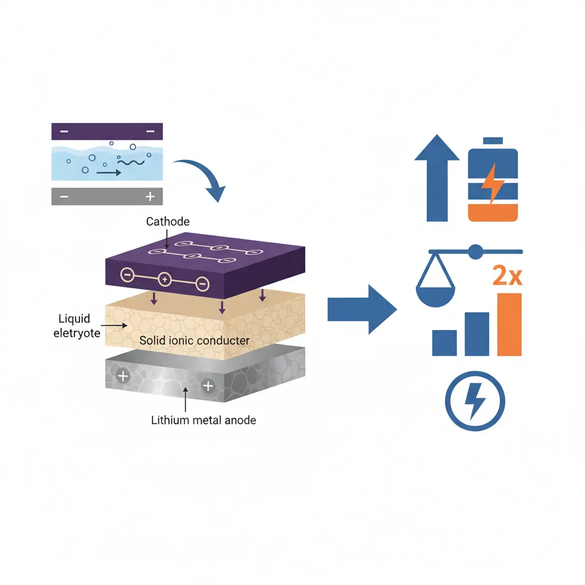
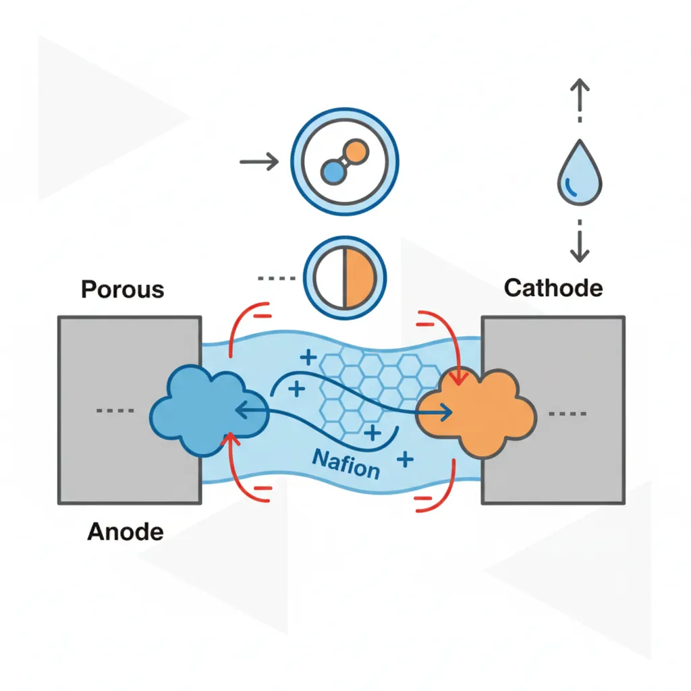
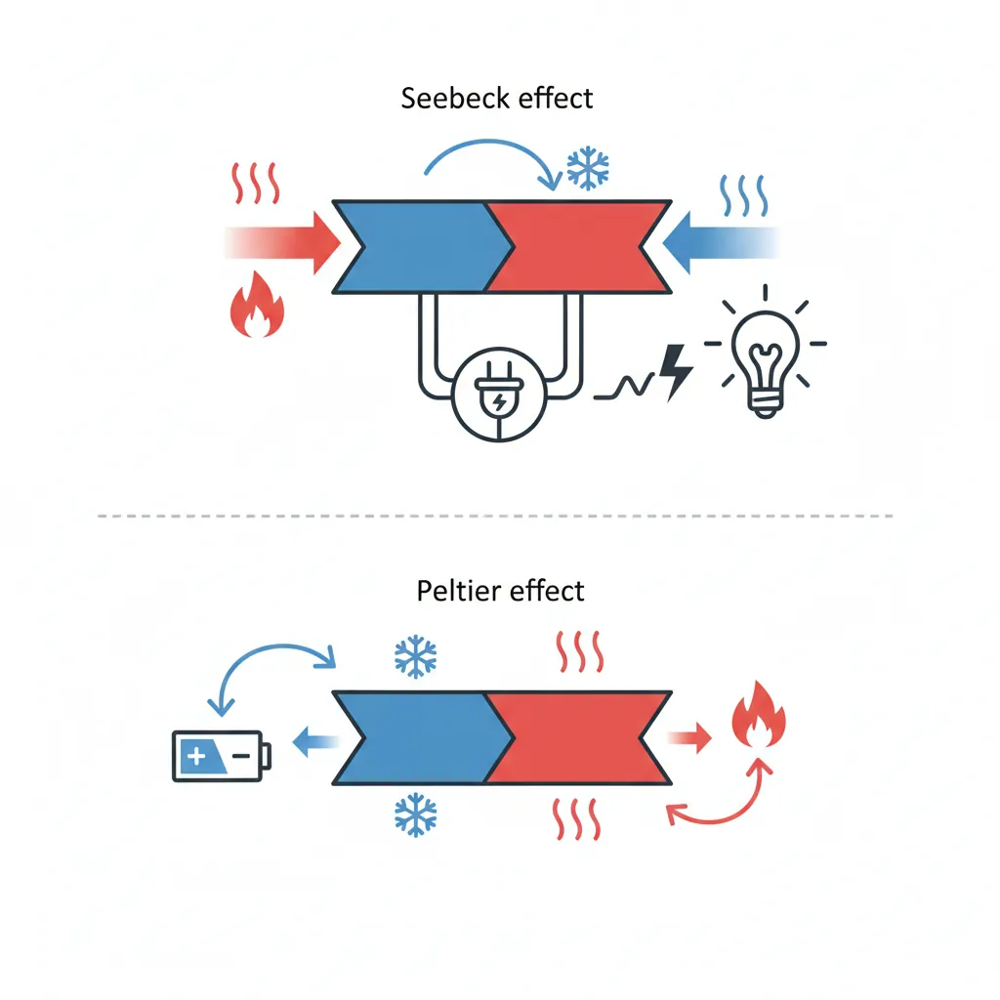
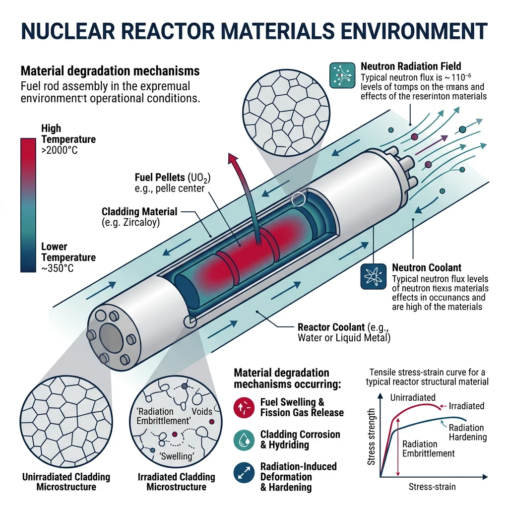

Battery Materials
Materials Science Mastery
Atomic Structure & Quantum Foundations
Quantum mechanics, bonding, band theory, Fermi energy, phononsCrystal Structures, Defects & Diffusion
FCC/BCC/HCP, Miller indices, dislocations, phase diagrams, Fick's lawsMetals & Alloys
Iron-carbon diagram, steels, aluminum, titanium, superalloys, heat treatmentPolymers & Soft Materials
Polymer chemistry, thermoplastics, viscoelasticity, rheology, biopolymersCeramics, Glass & Composites
Oxide ceramics, toughening, fiber-reinforced composites, interfacial bondingMechanical Behavior & Testing
Stress-strain, hardness, fatigue, fracture toughness, nanoindentationFailure Analysis & Reliability Engineering
Fractography, corrosion, tribology, root cause analysisNanomaterials & Smart Materials
Nanotubes, graphene, piezoelectrics, shape memory alloys, self-healingMaterials Characterization Techniques
XRD, SEM, TEM, AFM, DSC, TGA, spectroscopyThermodynamics & Kinetics of Materials
Gibbs free energy, CALPHAD, phase stability, solidificationElectronic, Magnetic & Optical Materials
Semiconductors, photovoltaics, dielectrics, superconductorsBiomaterials
Implants, biocompatibility, tissue engineering, drug deliveryEnergy Materials
Battery materials, hydrogen storage, fuel cells, nuclear materialsComputational Materials Science
DFT, molecular dynamics, FEM, materials informatics, AILithium-ion batteries dominate modern energy storage because of a clever mechanism called intercalation: lithium ions shuttle between layered crystal structures without breaking the host lattice. The cathode (positive electrode) and anode (negative electrode) are chosen so that lithium sits at different energy levels in each, creating a voltage difference that drives electrical current through an external circuit.

The overall cell reaction for a typical LiCoO₂/graphite cell is:
LiCoO₂ + C₆ ⇌ Li₁₋ₓCoO₂ + LiₓC₆
During discharge, lithium deintercalates from graphite layers and intercalates into the layered oxide cathode, while electrons flow through the external circuit from anode to cathode — powering your device.
Cathode Materials Comparison
The choice of cathode material defines battery performance more than any other component. Each material trades off energy density, safety, cost, and cycle life differently:
| Cathode | Formula | Voltage (V) | Capacity (mAh/g) | Energy Density | Safety | Cost | Cycle Life | Primary Use |
|---|---|---|---|---|---|---|---|---|
| LCO | LiCoO₂ | 3.7 | ~150 | High | Low | High (cobalt) | 500–1,000 | Consumer electronics |
| NMC | Li(NiMnCo)O₂ | 3.6–3.7 | ~170–200 | High | Medium | Medium | 1,000–2,000 | EVs, grid storage |
| LFP | LiFePO₄ | 3.2 | ~160 | Moderate | Excellent | Low | 2,000–5,000+ | EVs, stationary storage |
| NCA | Li(NiCoAl)O₂ | 3.6 | ~200 | Very high | Low-Medium | Medium-High | 500–1,000 | Tesla long-range EVs |
Anode Materials
Graphite remains the dominant anode because each carbon hexagonal layer can intercalate lithium to form LiC₆, providing 372 mAh/g capacity with excellent reversibility. Silicon offers a tantalizing 10× higher theoretical capacity (~3,579 mAh/g), but it swells ~300% during lithiation, pulverizing the electrode over repeated cycles. Current solutions include silicon-graphite composites (5–10% Si by weight) and nano-structured silicon. Lithium metal anodes offer the ultimate capacity (3,860 mAh/g) but suffer from dendrite growth — needle-like lithium projections that can pierce the separator and cause short circuits, fires, or explosions.
Energy Density vs. Power Density
A Ragone plot is the key visualization for comparing energy storage devices. The y-axis shows specific energy (Wh/kg — how much total energy is stored), while the x-axis shows specific power (W/kg — how fast energy can be delivered). Batteries live in the high-energy corner; supercapacitors in the high-power corner; fuel cells offer both moderate energy and power.
import numpy as np
import matplotlib.pyplot as plt
# Ragone plot: comparing energy storage technologies
# Data: [specific_power_W_kg, specific_energy_Wh_kg] ranges
technologies = {
'Li-ion Battery': {'power': [100, 3000], 'energy': [100, 265]},
'Lead-Acid': {'power': [50, 400], 'energy': [25, 50]},
'NiMH': {'power': [100, 1000], 'energy': [40, 80]},
'Supercapacitor': {'power': [1000, 100000], 'energy': [1, 10]},
'Fuel Cell (PEM)': {'power': [10, 500], 'energy': [300, 1000]},
'Li-S Battery': {'power': [50, 500], 'energy': [200, 500]},
'Na-ion Battery': {'power': [50, 1000], 'energy': [75, 160]},
}
colors = ['#E74C3C', '#7F8C8D', '#27AE60', '#F39C12', '#3498DB', '#9B59B6', '#E67E22']
fig, ax = plt.subplots(figsize=(10, 7))
for i, (name, data) in enumerate(technologies.items()):
p = data['power']
e = data['energy']
# Draw ellipse-like region
cx = np.sqrt(p[0] * p[1]) # geometric mean
cy = np.sqrt(e[0] * e[1])
ax.fill([p[0], p[1], p[1], p[0]],
[e[0], e[0], e[1], e[1]],
alpha=0.25, color=colors[i])
ax.text(cx, cy, name, ha='center', va='center',
fontsize=8, fontweight='bold', color=colors[i])
ax.set_xscale('log')
ax.set_yscale('log')
ax.set_xlabel('Specific Power (W/kg)', fontsize=12)
ax.set_ylabel('Specific Energy (Wh/kg)', fontsize=12)
ax.set_title('Ragone Plot — Energy vs. Power Density', fontsize=14)
ax.set_xlim(10, 200000)
ax.set_ylim(0.5, 2000)
ax.grid(True, which='both', alpha=0.3, linestyle='--')
ax.annotate('Seconds', xy=(50000, 1), fontsize=8, color='gray')
ax.annotate('Hours', xy=(15, 200), fontsize=8, color='gray')
plt.tight_layout()
plt.show()
print("Ragone plot shows trade-off: batteries store more, capacitors deliver faster")
Case Study: Tesla's Battery Chemistry Evolution
Tesla's battery strategy reveals how cathode chemistry drives real-world trade-offs:
- 2012 Model S: Used Panasonic NCA cells (high nickel content) for maximum range — ~265 miles. Cobalt content was significant, making packs expensive.
- 2017–2020: Evolved to NCA with progressively less cobalt — from NCA111 toward nickel-rich NCA (~90% Ni). Tesla's "Battery Day" (2020) announced plans for tabless cell designs and dry electrode coating.
- 2021–2023: Introduced LFP cathode for Standard Range Model 3/Y — cheaper, safer, longer cycle life (~4,000 cycles), but ~15% lower energy density. LFP packs use iron and phosphate instead of nickel and cobalt, reducing cost by ~30%.
- 2024+: 4680 cell format with silicon-doped graphite anodes, plus exploration of sodium-ion for entry-level vehicles in markets like China.
Key insight: No single chemistry wins everywhere — Tesla uses NCA/NMC where range matters most, and LFP where cost and longevity dominate.
Electrolytes & Separators
The electrolyte serves as the ion-conducting medium between electrodes while being an electronic insulator. It must be chemically stable against both electrode surfaces across the operating voltage window (typically 0–4.3 V vs. Li/Li⁺).
| Electrolyte Type | Materials | Conductivity (S/cm) | Advantages | Challenges |
|---|---|---|---|---|
| Liquid | LiPF₆ in EC/DMC | ~10⁻² | High conductivity, mature technology | Flammable, dendrite formation, narrow voltage window |
| Solid oxide/sulfide | LLZO, Li₆PS₅Cl | 10⁻⁴–10⁻³ | Non-flammable, wide voltage window, dendrite suppression | Brittle, grain boundary resistance, manufacturing cost |
| Polymer | PEO-LiTFSI | ~10⁻⁵ (RT) | Flexible, lightweight, easy processing | Low RT conductivity, requires elevated temperature (60–80 °C) |
| Gel polymer | PVDF-HFP + liquid | ~10⁻³ | Combines liquid conductivity with polymer safety | Reduced mechanical strength, partial flammability |
The separator — typically a porous polyethylene or polypropylene membrane (~20 μm thick) — physically prevents electrode contact while allowing ion transport. Advanced ceramic-coated separators (Al₂O₃ or SiO₂ coating) improve thermal stability, preventing meltdown-induced short circuits.
Solid-State Batteries
Solid-state batteries replace the liquid electrolyte entirely with a solid ionic conductor, enabling the use of lithium metal anodes and potentially doubling energy density (>500 Wh/kg). The two leading solid electrolyte families are:

- Oxide ceramics (e.g., LLZO — Li₇La₃Zr₂O₁₂): Chemically stable, hard, but require high-temperature sintering (~1,100 °C) and suffer from poor interfacial contact with electrodes. Grain boundaries create resistive bottlenecks.
- Sulfide glasses (e.g., Li₆PS₅Cl, Li₁₀GeP₂S₁₂): Higher ionic conductivity (~10⁻² S/cm — rivaling liquids), softer and more processable, but react with moisture to produce toxic H₂S gas and are unstable against lithium metal at high voltages.
Hydrogen & Fuel Cells

PEM Fuel Cells
A proton exchange membrane (PEM) fuel cell operates at 60–80 °C and consists of several critical material layers:
- Membrane: Nafion® (sulfonated PTFE) — the gold standard proton conductor (~0.1 S/cm when humidified). Protons hop along sulfonic acid groups while electrons are blocked. Thickness: ~25–50 μm.
- Catalyst layers: Platinum nanoparticles (2–5 nm) dispersed on high-surface-area carbon black. Pt loading drives cost — reducing from ~0.4 mg/cm² toward <0.1 mg/cm² is a major research target. At the anode: H₂ → 2H⁺ + 2e⁻. At the cathode: ½O₂ + 2H⁺ + 2e⁻ → H₂O.
- Gas diffusion layer (GDL): Carbon paper or cloth with PTFE waterproofing — delivers gas uniformly to the catalyst while removing product water. Porosity ~70–80%.
- Bipolar plates: Graphite or metal (stainless steel, titanium) flow-field plates that distribute gases and collect current. Must resist corrosion in the acidic membrane environment.
Fuel Cell Types Comparison
| Type | Electrolyte | Temperature | Fuel | Efficiency | Applications |
|---|---|---|---|---|---|
| PEMFC | Nafion membrane | 60–80 °C | H₂ (pure) | 40–60% | Vehicles, portable power |
| SOFC | YSZ (yttria-stabilized zirconia) | 600–1,000 °C | H₂, CH₄, CO | 50–65% | Stationary power, CHP |
| AFC | KOH solution | 60–90 °C | H₂ (pure) | 60–70% | Space (Apollo, Shuttle) |
| DMFC | Nafion membrane | 60–130 °C | Methanol | 20–30% | Portable electronics |
| MCFC | Molten Li₂CO₃/K₂CO₃ | ~650 °C | H₂, CH₄ | 45–55% | Large stationary plants |
SOFC materials deserve special attention: the electrolyte is yttria-stabilized zirconia (8 mol% Y₂O₃ in ZrO₂), which conducts oxide ions (O²⁻) at high temperature through oxygen vacancy hopping. The cathode is typically lanthanum strontium manganite (LSM), a mixed ionic-electronic conductor. The anode is a Ni-YSZ cermet — nickel provides catalytic activity and electronic conductivity, while YSZ provides ionic conductivity and structural integrity.
Hydrogen Storage Materials
Storing hydrogen is arguably harder than producing it. At standard conditions, H₂ has an energy density of only 0.01 MJ/L compared to 34 MJ/L for gasoline. Four main approaches exist:
- Compressed gas (350–700 bar): Carbon fiber composite tanks (Type IV). Toyota Mirai uses 700 bar tanks storing ~5.6 kg H₂. Simple but bulky — volumetric density only ~40 g/L.
- Liquid hydrogen (–253 °C): Cryogenic storage achieves ~71 g/L but requires ~30% of the hydrogen's energy content for liquefaction. Boil-off losses of 1–3% per day are unavoidable.
- Metal hydrides: Metals like LaNi₅, TiFe, and MgH₂ absorb hydrogen into their crystal lattice. MgH₂ stores 7.6 wt% H₂ but requires ~300 °C to release it. LaNi₅ operates near room temperature but stores only 1.4 wt%.
- MOFs and porous materials: Metal-organic frameworks (e.g., MOF-5, HKUST-1) have enormous surface areas (>3,000 m²/g) that physisorb H₂ at cryogenic temperatures. Storage densities reach ~7–10 wt% at 77 K but drop below 1 wt% at room temperature.
Case Study: Toyota Mirai Fuel Cell Vehicle
The Toyota Mirai (2014 Gen 1, 2020 Gen 2) is the world's most commercially successful hydrogen fuel cell vehicle, demonstrating materials science in action:
- Fuel cell stack: 330 PEM cells generating 128 kW (Gen 2). Uses Pt/C catalyst at ~0.12 mg-Pt/cm² — a 75% reduction from early PEM cells through nanostructured thin-film (NSTF) catalysts.
- Membrane: Reinforced Nafion-type membrane with cerium oxide radical scavengers extending membrane life beyond 150,000 km. Humidity management is critical — too dry increases resistance; too wet floods the catalyst layer.
- Hydrogen tanks: Three-layer Type IV tanks — polymer liner, carbon fiber reinforced polymer (CFRP) overwrap, fiberglass protective shell. Burst pressure: 1,575 bar (2.25× safety factor over 700 bar operating pressure).
- Performance: 650 km range (Gen 2), 5-minute refueling, water vapor as only emission. Tank-to-wheel efficiency ~60% (vs. ~20–25% for gasoline ICE).
Materials challenge: Platinum cost accounts for ~45% of the stack cost. Current research focuses on Pt-alloy catalysts (PtCo, PtNi), core-shell structures, and non-precious-metal catalysts (Fe-N-C) to reduce dependence on platinum group metals.
Water Electrolysis & Green Hydrogen
Green hydrogen — produced by splitting water using renewable electricity — requires efficient and durable catalyst materials for both the hydrogen evolution reaction (HER) and oxygen evolution reaction (OER):
- PEM electrolyzers: Iridium oxide (IrO₂) for OER at the anode and platinum for HER at the cathode. Iridium is one of the rarest elements on Earth (~3 tonnes/year mined) — a critical bottleneck for scaling green hydrogen.
- Alkaline electrolyzers: Use nickel-based catalysts (Raney nickel, NiFe layered double hydroxides) in concentrated KOH. Cheaper but slower response time than PEM.
- Solid oxide electrolyzers: Operate at 700–900 °C using steam, achieving higher efficiency (theoretically >90%) because thermal energy supplements electrical energy. Materials overlap with SOFCs: YSZ electrolyte, LSM/LSCF oxygen electrode, Ni-YSZ fuel electrode.
Thermoelectric & Nuclear Materials
Thermoelectric materials convert temperature differences directly into electrical voltage (the Seebeck effect) or use electrical current to create cooling (the Peltier effect). When two dissimilar conductors are joined and their junctions held at different temperatures, a voltage proportional to ΔT appears. The proportionality constant is the Seebeck coefficient (S, measured in μV/K).

Figure of Merit ZT
Thermoelectric performance is quantified by the dimensionless figure of merit:
ZT = S²σT / κ
where S is the Seebeck coefficient, σ is electrical conductivity, T is absolute temperature, and κ is thermal conductivity (with electronic and lattice components). Achieving high ZT requires the seemingly contradictory combination of high electrical conductivity (like a metal) but low thermal conductivity (like a glass) — the "phonon glass, electron crystal" concept.
| Material | Max ZT | Optimal T (°C) | Applications |
|---|---|---|---|
| Bi₂Te₃ | ~1.0 | 25–250 | Peltier coolers, low-grade waste heat |
| PbTe | ~1.5–2.0 | 300–600 | Automotive exhaust, industrial waste heat |
| SiGe | ~0.8–1.0 | 600–1,000 | Radioisotope thermoelectric generators (RTGs) — Voyager, Curiosity |
| SnSe | ~2.6 (single crystal) | 500–800 | Research frontier — record ZT in bulk |
| Skutterudites (CoSb₃) | ~1.2–1.7 | 400–600 | Mid-temperature waste heat recovery |
import numpy as np
import matplotlib.pyplot as plt
# Thermoelectric conversion efficiency vs. ZT
# Carnot efficiency: eta_C = 1 - T_cold/T_hot
# TE efficiency: eta = eta_C * (sqrt(1+ZT_avg) - 1) / (sqrt(1+ZT_avg) + T_cold/T_hot)
T_hot = 600 + 273.15 # 600 C hot side (K)
T_cold = 25 + 273.15 # 25 C cold side (K)
eta_carnot = 1 - T_cold / T_hot
ZT = np.linspace(0.01, 5.0, 200)
eta_te = eta_carnot * (np.sqrt(1 + ZT) - 1) / (np.sqrt(1 + ZT) + T_cold / T_hot)
fig, ax = plt.subplots(figsize=(9, 6))
ax.plot(ZT, eta_te * 100, 'b-', linewidth=2.5, label='TE Efficiency')
ax.axhline(y=eta_carnot * 100, color='r', linestyle='--', linewidth=1.5,
label=f'Carnot Limit ({eta_carnot*100:.1f}%)')
# Mark real materials
materials = {
'Bi₂Te₃': 1.0, 'PbTe': 1.8, 'SiGe': 0.9,
'SnSe': 2.6, 'Skutterudite': 1.5
}
for name, zt_val in materials.items():
eff = eta_carnot * (np.sqrt(1 + zt_val) - 1) / (np.sqrt(1 + zt_val) + T_cold / T_hot)
ax.plot(zt_val, eff * 100, 'ko', markersize=8)
ax.annotate(name, (zt_val, eff * 100), textcoords='offset points',
xytext=(8, 8), fontsize=8, fontweight='bold')
ax.set_xlabel('Figure of Merit ZT', fontsize=12)
ax.set_ylabel('Conversion Efficiency (%)', fontsize=12)
ax.set_title(f'Thermoelectric Efficiency vs. ZT\n(T_hot={T_hot-273.15:.0f}°C, T_cold={T_cold-273.15:.0f}°C)',
fontsize=13)
ax.legend(fontsize=10)
ax.set_xlim(0, 5)
ax.set_ylim(0, 70)
ax.grid(True, alpha=0.3)
plt.tight_layout()
plt.show()
print(f"Carnot efficiency: {eta_carnot*100:.1f}%")
print(f"At ZT=1: {eta_carnot * (np.sqrt(2)-1)/(np.sqrt(2)+T_cold/T_hot)*100:.1f}% efficiency")
print(f"At ZT=3: {eta_carnot * (np.sqrt(4)-1)/(np.sqrt(4)+T_cold/T_hot)*100:.1f}% efficiency")
Solar & Emerging Photovoltaic Materials
Beyond the crystalline silicon and thin-film solar cells covered in Part 11, several emerging materials promise to break the silicon efficiency ceiling:
- Perovskite solar cells (ABX₃ structure): Methylammonium lead iodide (MAPbI₃) and formamidinium variants have rocketed from 3.8% efficiency (2009) to >26% (2024) — the fastest improvement of any PV technology in history. They can be solution-processed at low temperatures (<150 °C), making them potentially very cheap. The critical challenge is stability — perovskites degrade in moisture, heat, and UV light within months without encapsulation.
- Tandem cells (perovskite-on-silicon): By stacking a wide-bandgap perovskite top cell (~1.7 eV) on a silicon bottom cell (~1.1 eV), tandem architectures absorb more of the solar spectrum. Lab record: 33.9% — exceeding the ~29.4% theoretical single-junction silicon limit. LONGi and Oxford PV are commercializing this approach.
- Organic photovoltaics (OPV): Conjugated polymers and small molecule acceptors enable flexible, lightweight, semi-transparent solar cells. Efficiencies now reach ~19% but degrade faster than inorganics. Best suited for building-integrated PV (windows, facades).
Thermal Energy Storage
Phase change materials (PCMs) store and release thermal energy during solid-liquid transitions. Paraffin waxes, salt hydrates (e.g., Na₂SO₄·10H₂O), and eutectic mixtures can store 150–300 kJ/kg at constant temperature — ideal for building climate control and solar thermal buffering. Molten salts (60% NaNO₃/40% KNO₃) are the workhorse for concentrating solar power (CSP) plants, storing heat at 290–565 °C for hours and delivering it to steam turbines after sunset.
Supercapacitors & Energy Storage Materials
Supercapacitors (also called ultracapacitors) bridge the gap between batteries and conventional capacitors. They store energy electrostatically at the electrode-electrolyte interface rather than through chemical reactions, enabling millions of charge-discharge cycles and power densities 10–100× higher than batteries:
- Electric double-layer capacitors (EDLCs): Use activated carbon electrodes (surface area ~1,500–3,000 m²/g) with aqueous or organic electrolytes. Energy stored in the Helmholtz double layer. Typical: 5–10 Wh/kg, 10,000+ W/kg.
- Pseudocapacitors: Metal oxides (MnO₂, RuO₂) or conducting polymers (polyaniline, PEDOT) undergo fast surface redox reactions, boosting capacitance 10–100× over EDLCs at the cost of some cyclability.
- Graphene-based supercapacitors: Graphene's theoretical surface area (2,630 m²/g), excellent conductivity, and mechanical flexibility make it ideal. Laser-scribed graphene supercapacitors achieve both high energy density (~30 Wh/kg) and rapid charging.
Case Study: Grid-Scale Energy Storage Comparison
As renewable electricity grows, grid-scale storage becomes essential. Different technologies serve different durations:
| Technology | Duration | Round-Trip Eff. | Cost ($/kWh) | Scale Example |
|---|---|---|---|---|
| Li-ion (LFP) | 2–4 hours | 85–95% | $150–250 | Moss Landing, CA (400 MW/1,600 MWh) |
| Pumped hydro | 6–24 hours | 70–85% | $50–150 | Bath County, VA (3,003 MW) |
| Flow battery (vanadium) | 4–12 hours | 65–80% | $300–500 | Dalian, China (200 MW/800 MWh) |
| Compressed air (CAES) | 8–24 hours | 40–70% | $50–100 | Huntorf, Germany (321 MW) |
| Green hydrogen | Days–weeks | 25–35% | $500–1,000+ | NEOM, Saudi Arabia (planned) |
Key insight: Short-duration storage (2–4 hours) is dominated by Li-ion due to falling costs. Long-duration storage (>10 hours) requires alternative technologies — pumped hydro for geography-blessed sites, hydrogen for seasonal storage, and flow batteries for flexible scaling.
Nuclear & Frontier Energy
Nuclear energy demands materials that can withstand the most extreme environment on Earth: temperatures of 300–1,000+ °C, intense neutron radiation (up to 10²⁰ n/cm²·s), corrosive coolants, and decades of continuous service. The materials science of nuclear systems is fundamentally about radiation damage tolerance.

Nuclear Fuel Materials
- UO₂ (uranium dioxide): The standard fuel for >95% of commercial reactors. Ceramic pellets (95% dense, ~10 mm diameter) stacked in zirconium alloy (Zircaloy-4) cladding tubes. UO₂ has a very high melting point (2,865 °C) and retains fission products well, but its low thermal conductivity (~5 W/m·K at 500 °C, dropping to ~2 W/m·K at 1,500 °C) creates steep temperature gradients across the pellet — the center can reach 1,800 °C while the surface is at 400 °C.
- MOX (mixed oxide — UO₂ + PuO₂): Recycles plutonium from spent fuel or weapons programs. Used in ~30 reactors worldwide (primarily France, Japan). Fissile Pu-239 substitutes for U-235 at 5–10% loading.
- Accident-tolerant fuels (ATF): Post-Fukushima emergency effort to develop fuels that tolerate loss-of-coolant for hours without catastrophic failure:
- Chromium-coated Zircaloy: ~10 μm Cr coating dramatically slows high-temperature steam oxidation (the reaction that generates explosive hydrogen: Zr + 2H₂O → ZrO₂ + 2H₂).
- FeCrAl cladding: Iron-chromium-aluminum alloys form a protective alumina (Al₂O₃) scale in steam, eliminating hydrogen generation. Trade-off: higher neutron absorption than Zircaloy requires enriched fuel.
- SiC/SiC composite cladding: Silicon carbide fiber-reinforced SiC matrix — outstanding high-temperature strength, low neutron absorption, and near-zero hydrogen generation. Manufacturing cost and hermeticity remain challenging.
- UN and U₃Si₂ fuels: Uranium nitride and uranium silicide have 3–5× higher thermal conductivity than UO₂, flattening the temperature profile and reducing stored energy during accidents.
Radiation Damage & Effects
When a high-energy neutron (typically ~2 MeV from fission) strikes a lattice atom, it transfers enough kinetic energy to displace it from its site, creating a primary knock-on atom (PKA). The PKA cascades through the lattice, displacing hundreds more atoms in a displacement cascade lasting ~10 picoseconds. The result:
- Point defects: Vacancies (empty sites) and interstitials (extra atoms squeezed between sites) — measured in displacements per atom (dpa). A reactor vessel might accumulate 0.01 dpa over 40 years; fast reactor fuel cladding can reach 100+ dpa.
- Void swelling: Vacancies cluster into voids, causing the material to swell up to 20–30% in volume (particularly in austenitic stainless steels at 400–600 °C). This was discovered in the 1960s and forced a redesign of fast reactor internals to ferritic/martensitic steels.
- Irradiation hardening & embrittlement: Defect clusters and dislocation loops increase yield strength but dramatically reduce ductility. The ductile-to-brittle transition temperature (DBTT) of reactor pressure vessel steel shifts upward by 50–200 °C over decades, threatening vessel integrity.
- Irradiation creep: Slow deformation under stress assisted by radiation-induced point defect diffusion — occurs even below normal thermal creep temperatures.
- Helium embrittlement: Transmutation reactions (especially in nickel-bearing alloys via ⁵⁸Ni + n → ⁵⁹Ni + n → ⁵⁶Fe + ⁴He) produce helium atoms that migrate to grain boundaries, forming bubbles that cause intergranular fracture.
Case Study: Fukushima & Accident-Tolerant Fuel Development
On March 11, 2011, a magnitude 9.0 earthquake and subsequent tsunami disabled cooling systems at the Fukushima Daiichi Nuclear Power Plant. What followed was fundamentally a materials failure cascade:
- Loss of coolant (t = 0–4 hours): Without water circulation, residual decay heat (~7% of operating power, diminishing exponentially) raised fuel temperatures from the normal ~400 °C toward ~1,200 °C.
- Zircaloy oxidation (t = 4–12 hours): Above ~1,200 °C, zirconium cladding reacts exothermically with steam:
Zr + 2H₂O → ZrO₂ + 2H₂ + 6.5 MJ/kg-Zr.
This reaction is autocatalytic — the heat it produces raises temperature further, accelerating the reaction. Units 1–3 generated hundreds of kilograms of hydrogen. - Hydrogen explosions (t = 12–72 hours): Accumulated hydrogen ignited in the reactor buildings, destroying containment structures of Units 1, 3, and 4.
- Core meltdown: Fuel pellet temperatures exceeded 2,865 °C (UO₂ melting point). Molten corium (a mixture of UO₂, ZrO₂, Zr metal, steel, and concrete) flowed to the bottom of the reactor pressure vessel.
Materials science response: The global nuclear industry launched accelerated ATF programs. Chromium-coated Zircaloy (Framatome's EATF) entered commercial reactor testing by 2019. FeCrAl cladding (GE's IronClad™) and SiC/SiC composites are in lead test rod programs. These materials would have provided 24–72 additional hours of coping time during Fukushima-type scenarios.
Fusion Materials & Next-Gen Storage
Fusion reactors present the ultimate materials challenge: plasma-facing components must survive 14.1 MeV neutrons (7× more energetic than fission neutrons), heat fluxes of 10–20 MW/m² (comparable to a spacecraft re-entry), and plasma temperatures exceeding 100 million °C.
- Tungsten: The primary plasma-facing material for ITER's divertor — highest melting point of any element (3,422 °C), high sputtering threshold, low tritium retention. But it is brittle below ~400 °C (DBTT), prone to recrystallization, and becomes radioactive under neutron irradiation (transmutation to rhenium and osmium).
- Reduced-activation ferritic/martensitic (RAFM) steels: F82H and EUROFER97 are designed for fusion blanket structures — they use controlled compositions (no Ni, Co, Nb, or Mo) to ensure radioactivity decays to hands-on levels within ~100 years.
- Lithium-containing ceramics: Li₂TiO₃ and Li₄SiO₄ pebbles in the tritium breeding blanket — neutrons convert lithium-6 to tritium (⁶Li + n → ⁴He + ³H), which is the fuel for D-T fusion.
Exercises & Problems
- Cathode Selection: A startup is designing an electric bus battery that must last 10 years with daily deep cycling (2 full cycles/day, ~7,300 total cycles). Which cathode chemistry should they choose — LCO, NMC-811, LFP, or NCA? Justify your answer considering cycle life, cost, thermal stability, and energy density trade-offs. Calculate whether NMC-811 (2,000 cycle life) could meet the requirement.
- Solid Electrolyte Conductivity: A sulfide solid electrolyte (Li₆PS₅Cl) has ionic conductivity of 3 × 10⁻³ S/cm at 25 °C, while a polymer electrolyte (PEO-LiTFSI) has 1 × 10⁻⁵ S/cm at 25 °C but 1 × 10⁻³ S/cm at 70 °C. For a solid-state battery operating at room temperature in an EV, which electrolyte would you select? What are the safety trade-offs of each? If the polymer cell were maintained at 70 °C using waste heat from the drivetrain, does the comparison change?
- Ragone Plot Analysis: A city bus requires 80 kWh of energy storage and needs 200 kW peak power for hill climbing. Write a Python script that checks whether a Li-ion battery (250 Wh/kg, 1,500 W/kg) or a supercapacitor bank (8 Wh/kg, 15,000 W/kg) can meet both requirements with a 1,000 kg mass budget. Could a hybrid system work? Calculate the optimal mass split.
- Thermoelectric Generator Design: An industrial furnace exhausts waste heat at 450 °C. Using Bi₂Te₃ (ZT ≈ 1.0, optimal at 25–250 °C) versus PbTe (ZT ≈ 1.8, optimal at 300–600 °C), calculate the thermoelectric conversion efficiency for each material with a cold side at 30 °C. Which would you select? How much electrical power could a 1 m² thermoelectric panel (assuming 500 W/m² heat flux) generate with each material?
- Radiation Damage Estimation: A reactor pressure vessel (RPV) made of SA-508 steel accumulates 0.005 dpa over 40 years. The ductile-to-brittle transition temperature (DBTT) shift follows the empirical formula ΔT_DBTT ≈ 600 × (dpa)⁰·⁵ °C. Calculate the DBTT shift. If the initial DBTT is −20 °C, will the RPV be at risk during a pressurized thermal shock event where cold emergency coolant at 10 °C contacts the vessel wall? What mitigation strategies exist?
- Hydrogen Storage Comparison: You need to store 5 kg of hydrogen for a fuel cell truck with a 300 km range. Calculate the mass and volume of storage for each method: (a) compressed gas at 700 bar (tank gravimetric efficiency ~5.7 wt% H₂, volumetric density 40 g/L), (b) MgH₂ metal hydride (7.6 wt% H₂, bulk density ~1.45 g/cm³), and (c) liquid hydrogen (density 70.8 g/L, tank mass penalty 2× fuel mass). Which method minimizes total system mass? Which minimizes volume?
Conclusion & Next Steps
Energy materials sit at the intersection of every discipline we have explored in this series — crystal structure and defect chemistry (Parts 1–2) govern how lithium intercalates into electrodes, mechanical behavior (Part 6) determines whether a battery electrode survives 5,000 charge cycles, and electronic properties (Part 11) control how efficiently a photovoltaic cell converts sunlight. The global energy transition is ultimately a materials transition: from fossil carbon to lithium, silicon, platinum, rare earths, and uranium — each with its own supply chain, processing challenges, and environmental considerations.
Key takeaways from this guide:
- Battery materials are defined by the cathode — LFP for longevity and safety, NMC/NCA for energy density. Solid-state electrolytes promise the next leap but face interfacial challenges.
- Fuel cells convert chemical energy to electricity at >50% efficiency, but platinum dependence and hydrogen infrastructure are barriers. SOFCs offer fuel flexibility at high temperatures.
- Thermoelectrics remain niche (ZT ≈ 1–2 limits efficiency to ~10–15%) but are invaluable where reliability outweighs efficiency — deep space, remote sensors, waste heat recovery.
- Nuclear materials must survive decades under extreme radiation — and Fukushima demonstrated that the cladding material choice (Zircaloy vs. ATF) can determine whether an accident remains contained or escalates.
- Grid-scale storage requires a portfolio approach — Li-ion for hours, pumped hydro for days, hydrogen for seasons.
Next in the Series
In Part 14: Computational Materials Science, we'll explore density functional theory (DFT), molecular dynamics, finite element methods, materials informatics, machine learning for materials discovery, and high-throughput computational screening.